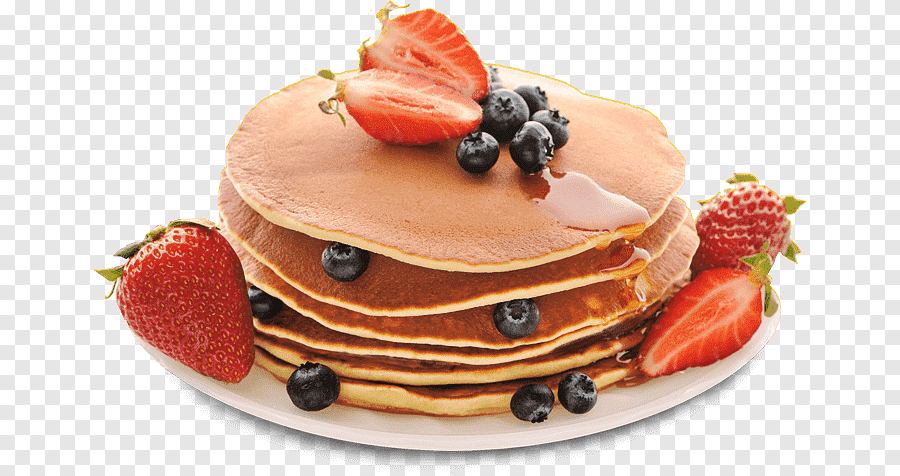

Odin Recipes - Pancakes

Description
This is a recipe for easy to bake pancakes.
You can make them before your family wakes up!
This recipe will take less than 20 minutes!
Ingredients
- Flour
- Sugar
- Baking Powder
- Salt
- Milk & Oil
- Egg
Steps
- Combine the dry ingredients.
- Add the wet ingredients and mix.
- Pour or ladle the batter onto the oiled griddle or pan.
- Cook until bubbles form, flip, and cook on the other side.
Homepage